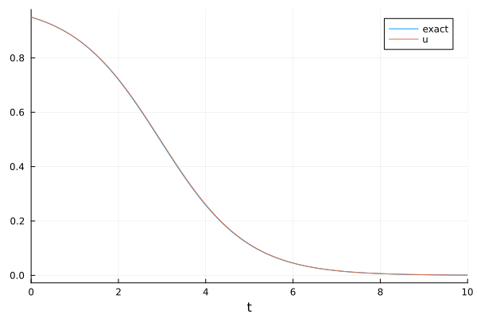
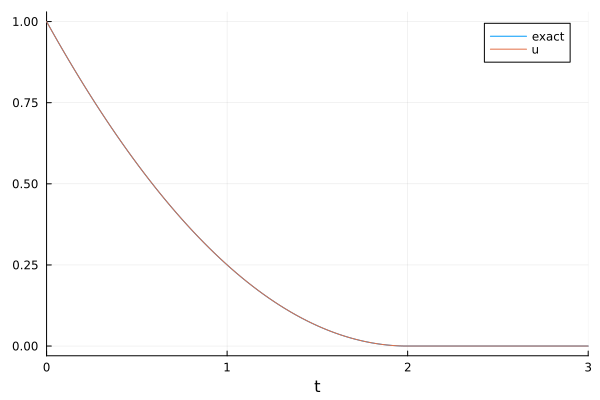

Tutorial: Solving a scalar production-destruction equation with MPRK schemes
Originally, modified Patankar-Runge-Kutta (MPRK) schemes were designed to solve positive and conservative systems of ordinary differential equations. The conservation property requires that the system consists of at least two scalar differential equations. Nevertheless, we can also apply the idea of the Patankar trick to a scalar production-destruction system (PDS)
\[u'(t)=p(u(t))-d(u(t)),\quad u(0)=u_0>0\]
with nonnegative functions $p$ and $d$. Since conservation is not an issue here, we can apply the Patankar trick to the destruction term $d$ to ensure positivity and leave the production term $p$ unweighted. A first-order scheme of this type, based on the forward Euler method, reads
\[u^{n+1}= u^n + Δ t p(u^n) - Δ t d(u^n)\frac{u^{n+1}}{u^n}\]
and this idea can easily be generalized to higher-order explicit Runge-Kutta schemes.
By closer inspection we realize that this is exactly the approach the MPRK schemes of PositiveIntegrators.jl use to solve non-conservative PDS for which the production matrix is diagonal. Hence, we can use the existing schemes to solve a scalar PDS by regarding the production term as a $1×1$-matrix and the destruction term as a $1$-vector.
Example 1
We want to solve
\[u' = u^2 - u,\quad u(0) = 0.95\]
for $0≤ t≤ 10$. Here, we can choose $p(u)=u^2$ as production term and $d(u)=u$ as destruction term. The exact solution of this problem is
\[u(t) = \frac{19}{19+e^{t}}.\]
Next, we show how to solve this scalar PDS in the way discussed above. Please note that we must use PDSProblem to create the problem. Furthermore, we use static matrices and vectors from StaticArrays.jl instead of standard arrays for efficiency.
using PositiveIntegrators, StaticArrays, Plotsu0 = @SVector [0.95] # 1-vectortspan = (0.0, 10.0)# Attention: Input u is a 1-vectorprod(u, p, t) = @SMatrix [u[1]^2] # create static 1x1-matrixdest(u, p, t) = @SVector [u[1]] # create static 1-vectorprob = PDSProblem(prod, dest, u0, tspan)sol = solve(prob, MPRK22(1.0))# plottt = 0:0.1:10f(t) = 19.0 / (19.0 + exp(t)) # exact solutionplot(tt, f.(tt), label="exact")plot!(sol, label="u")
[Example 2] (@id scalar-example-2)
Next, we want to compute positive solutions of a more challenging scalar PDS. In Example 1, we could have also used standard schemes from OrdinaryDiffEq.jl and use the solver option isoutofdomain to ensure positivity. But this is not always the case as the following example will show.
We want to compute the nonnegative solution of
\[u'(t) = -\sqrt{\lvert u(t)\rvert },\quad u(0)=1.\]
for $t≥ 0$. Please note that this initial value problem has infinitely many solutions
\[u(t) = \begin{cases} \frac{1}{4}(t-2)^2, & 0≤ t< 2,\\ 0, & 2≤ t < t^*,\\ -\frac{1}{4}(t-2)^2, & t^*≤ t, \end{cases}\]
where $t^*≥ 2$ is arbitrary. But among these, the only nonnegative solution is
\[u(t) = \begin{cases} \frac{1}{4}(t-2)^2, & 0≤ t< 2,\\ 0, & 2≤ t. \end{cases}\]
This is the solution we want to compute.
First, we try this using a standard solver from OrdinaryDiffEq.jl. We try to enforce positivity with the solver option isoutofdomain by specifying that negative solution components are not acceptable.
using OrdinaryDiffEqRosenbrocktspan = (0.0, 3.0)u0 = 1.0f(u, p, t) = -sqrt(abs(u))prob = ODEProblem(f, u0, tspan)sol = solve(prob, Rosenbrock23(); isoutofdomain = (u, p, t) -> any(<(0), u))retcode: Unstable
Interpolation: specialized 2nd order "free" stiffness-aware interpolation
t: 79-element Vector{Float64}:
0.0
0.003163858403911277
0.06925417950280421
0.13534450060169717
0.25935156497619893
0.3833586293507007
0.5474028568993289
0.7114470844479571
0.8840960219619203
1.0567449594758833
⋮
1.9958656232283507
1.995865623228757
1.9958656232287635
1.9958656232287766
1.9958656232287817
1.9958656232287821
1.995865623228783
1.9958656232287832
1.995865623228784
u: 79-element Vector{Float64}:
1.0
0.9968386434463932
0.9319389947707839
0.8692233139936402
0.7574123814364832
0.6532904052725234
0.5273192467282414
0.41480388190777184
0.3109051722216604
0.2219117747433456
⋮
2.499655117086426e-26
2.023660135537898e-28
1.2009939469153182e-28
1.6762427289044603e-29
1.7120001994297462e-30
1.2098837033612874e-30
4.586188251284388e-31
2.599156290257811e-31
2.2668844061360042e-32We see that isoutofdomain cannot be used to ensure nonnegative solutions in this case, as the computation stops at about $t≈ 2$ before the desired final time is reached. For at least first- and second-order explicit Runge-Kutta schemes, this can also be shown analytically. A brief computation reveals that to ensure nonnegative solutions, the time step size must tend to zero if the numerical solution tends to zero.
Next, we want to use an MPRK scheme. We can choose $p(u)=0$ as the production term and $d(u)=\sqrt{\lvert u\rvert }$ as the destruction term. Furthermore, we create the PDSProblem in the same way as in Example 1.
using PositiveIntegrators, StaticArrays, Plotstspan = (0.0, 3.0)u0 = @SVector [1.0]prod(u, p, t) = @SMatrix zeros(1,1)dest(u, p, t) = @SVector [sqrt(abs(first(u)))]prob = PDSProblem(prod, dest, u0, tspan)sol = solve(prob, MPRK22(1.0))# plottt = 0:0.03:3f(t) = 0.25 * (t - 2)^2 * (t <= 2) # exact solutionplot(tt, f.(tt), label="exact")plot!(sol, label="u")
We can see that the MPRK scheme used is well suited to solve the problem.
Package versions
These results were obtained using the following versions.
using InteractiveUtilsversioninfo()println()using PkgPkg.status(["PositiveIntegrators", "StaticArrays", "OrdinaryDiffEqRosenbrock"], mode = PKGMODE_MANIFEST)Julia Version 1.12.7
Commit 6d172b025e4 (2026-08-15 08:05 UTC)
Build Info:
Official https://julialang.org release
Platform Info:
OS: Linux (x86_64-linux-gnu)
CPU: 4 × AMD EPYC 7763 64-Core Processor
WORD_SIZE: 64
LLVM: libLLVM-18.1.7 (ORCJIT, znver3)
GC: Built with stock GC
Threads: 1 default, 1 interactive, 1 GC (on 4 virtual cores)
Environment:
JULIA_PKG_SERVER_REGISTRY_PREFERENCE = eager
Status `~/work/PositiveIntegrators.jl/PositiveIntegrators.jl/docs/Manifest.toml`
[43230ef6] OrdinaryDiffEqRosenbrock v2.7.0
[d1b20bf0] PositiveIntegrators v0.2.20-DEV `~/work/PositiveIntegrators.jl/PositiveIntegrators.jl`
[90137ffa] StaticArrays v1.9.19